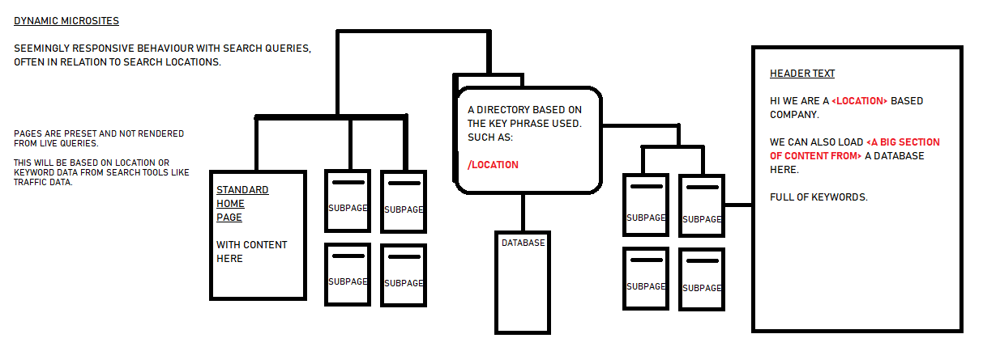

About SEO
Search engine optimization (SEO), a subset of search engine marketing, is the process of improving the volume and quality of traffic to a web site from search engines via "natural" ("organic" or "algorithmic") search results. SEO can also target specialized searches such as image search, local search, and industry-specific vertical search engines.
SEO is marketing by understanding how search algorithms work and what human visitors might search for, to help match those visitors with sites offering what they are interested in finding. Some SEO efforts may involve optimizing a site's coding, presentation, and structure, without making very noticeable changes to human visitors, such as incorporating a clear hierarchical structure to a site, and avoiding or fixing problems that might keep search engine indexing programs from fully spidering a site. Other, more noticeable efforts, involve including unique content on pages that can be easily indexed and extracted from those pages by search engines while also appealing to human visitors.
The term SEO can also refer to "search engine optimizers," a term adopted by an industry of consultants who carry out optimization projects on behalf of clients, and by employees of site owners who may perform SEO services in-house. Search engine optimizers often offer SEO as a stand-alone service or as a part of a larger marketing campaign. Because effective SEO can require making changes to the source code of a site, it is often very helpful when incorporated into the initial development and design of a site, leading to the use of the term "Search Engine Friendly" to describe designs, menus, content management systems and shopping carts that can be optimized easily and effectively.
In Internet marketing, search engine marketing, or SEM, is a set of marketing methods to increase the visibility of a website in search engine results pages (SERPs). SEM strategies include:
Search engine optimization attempts to improve rankings for relevant keywords in search results by improving a web site's structure, content, and relevant back link count.
Pay per click advertising uses sponsored search engine listings to drive traffic to a web site. The advertiser bids for search terms, and the search engine ranks ads based on a competitive auction as well as other factors.
Paid inclusion feeds listings into search engines, typically comparative shopping sites like Nextag.
Social media optimization promotes by placing ideas within online communities with the hope that they will spread virally. Check out: revillin.com
Video Search Marketing attempts to promote a business by strategically placing short video clips on websites such as YouTube to be picked up search engine spiders or promoted through internal rating systems.
Vertical search, part of a larger sub-grouping known as “specialized” search, is a relatively new tier in the Internet search industry consisting of search engines that focus on specific businesses. While Google, Yahoo!, and the like will continue to dominate the online consumer search market, research analysts say myriad specialized search engines are emerging to address the particular information needs of niche audiences and professions.
A web crawler (also known as a Web spider or Web robot) is a program or automated script which browses the World Wide Web in a methodical, automated manner. Other less frequently used names for Web crawlers are ants, automatic indexers, bots, and worms (Kobayashi and Takeda, 2000).
This process is called Web crawling or spidering. Many sites, in particular search engines, use spidering as a means of providing up-to-date data. Web crawlers are mainly used to create a copy of all the visited pages for later processing by a search engine, that will index the downloaded pages to provide fast searches. Crawlers can also be used for automating maintenance tasks on a Web site, such as checking links or validating HTML code. Also, crawlers can be used to gather specific types of information from Web pages, such as harvesting e-mail addresses (usually for spam).
A Web crawler is one type of bot, or software agent. In general, it starts with a list of URLs to visit, called the seeds. As the crawler visits these URLs, it identifies all the hyperlinks in the page and adds them to the list of URLs to visit, called the crawl frontier. URLs from the frontier are recursively visited according to a set of policies
Webmasters and content providers began optimizing sites for search engines in the mid-1990s, as the first search engines were cataloguing the early Web.
Initially, all a webmaster needed to do was submit a page, or URL, to the various engines which would send a spider to "crawl" that page, extract links to other pages from it, and return information found on the page to be indexed.[1] The process involves a search engine spider downloading a page and storing it on the search engine's own server, where a second program, known as an indexer, extracts various information about the page, such as the words it contains and where these are located, as well as any weight for specific words, as well as any and all links the page contains, which are then placed into a scheduler for crawling at a later date.
Site owners started to recognize the value of having their sites highly ranked and visible in search engine results, creating an opportunity for both "white hat" and "black hat" SEO practitioners. Indeed, by 1996, email spam could be found on Usenet touting SEO services.[2] The earliest known use of the phrase "search engine optimization" was a spam message posted on Usenet on July 26, 1997.[3]
Early versions of search algorithms relied on webmaster-provided information such as the keyword meta tag, or index files in engines like ALIWEB. Meta-tags provided a guide to each page's content. But indexing pages based upon meta data was found to be less than reliable, because some webmasters abused meta tags by including irrelevant keywords to artificially increase page impressions for their website and to increase their ad revenue. Cost per thousand impressions was at the time the common means of monetizing content websites. Inaccurate, incomplete, and inconsistent meta data in meta tags caused pages to rank for irrelevant searches, and fail to rank for relevant searches.[4] Web content providers also manipulated a number of attributes within the HTML source of a page in an attempt to rank well in search engines.[5]
By relying so much upon factors exclusively within a webmaster's control, early search engines suffered from abuse and ranking manipulation. To provide better results to their users, search engines had to adapt to ensure their results pages showed the most relevant search results, rather than unrelated pages stuffed with numerous keywords by unscrupulous webmasters. Search engines responded by developing more complex ranking algorithms, taking into account additional factors that were more difficult for webmasters to manipulate.
Second stage: Link analysis
Larry Page and Sergei Brin, while graduate students at Stanford University, developed a search engine called "backrub" that relied on a mathematical algorithm to rate the prominence of web pages. The number calculated by the algorithm is called PageRank, and is based upon the quantity and prominence of incoming links.[6] PageRank estimates the likelihood that a given page will be reached by a web user who randomly surfs the web, and follows links from one page to another. In effect, this means that some links are stronger than others, as a higher PageRank page is more likely to be reached by the random surfer.
Page and Brin founded Google in 1998. On strong word of mouth from programmers, Google became a popular search engine. Off-page factors such as PageRank and hyperlink analysis were considered, as well as on-page factors, to enable Google to avoid the kind of manipulation seen in search engines focusing primarily upon on-page factors for their rankings. Although PageRank was more difficult to game, webmasters had already developed link building tools and schemes to influence the Inktomi search engine, and these methods proved similarly applicable to gaining PageRank. Many sites focused on exchanging, buying, and selling links, often on a massive scale. Some of these schemes, or link farms, involved the creation of thousands of sites for the sole purpose of link spamming.[7]
Current technology: Search engines consider many signals
To reduce the impact of link schemes, search engines have developed a wider range of undisclosed off-site factors they use in their algorithms. As a search engine may use hundreds of factors in ranking the listings on its SERPs, the factors themselves and the weight each carries can change continually, and algorithms can differ widely. The four leading search engines, Google, Yahoo, Microsoft and Ask.com, do not disclose the algorithms they use to rank pages. Some SEOs have carried out controlled experiments to gauge the effects of different approaches to search optimization, and share results through online forums and blogs.[8] SEO practitioners may also study patents held by various search engines to gain insight into the algorithms.[9]
Optimizing for traffic quality
In addition to seeking better rankings, search engine optimization is also concerned with traffic quality. Traffic quality is measured by how often a visitor using a specific keyword phrase leads to a desired conversion action, such as making a purchase, viewing or downloading a certain page, requesting further information, signing up for a newsletter, or taking some other specific action.
By improving the quality of a page's search listings, more searchers may select that page, and those searchers may be more likely to convert. Examples of SEO tactics to improve traffic quality include writing attention-grabbing titles, adding accurate meta descriptions, and choosing a domain and URL that improve the site's branding.
Relationship between SEO and search engines
By 1997 search engines recognized that some webmasters were making efforts to rank well in their search engines, and even manipulating the page rankings in search results. In some early search engines, such as Infoseek, ranking first was as easy as grabbing the source code of the top-ranked page, placing it on your website, and submitting a URL to instantly index and rank that page.[citation needed]
Due to the high value and targeting of search results, there is potential for an adversarial relationship between search engines and SEOs. In 2005, an annual conference named AirWeb[10] was created to discuss bridging the gap and minimizing the sometimes damaging effects of aggressive web content providers.
Some more aggressive site owners and SEOs generate automated sites or employ techniques that eventually get domains banned from the search engines. Many search engine optimization companies, which sell services, employ long-term, low-risk strategies, and most SEO firms that do employ high-risk strategies do so on their own affiliate, lead-generation, or content sites, instead of risking client websites.
Some SEO companies employ aggressive techniques that get their client websites banned from the search results. The Wall Street Journal profiled a company, Traffic Power, that allegedly used high-risk techniques and failed to disclose those risks to its clients.[11] Wired reported the same company sued a blogger for mentioning that they were banned.[12] Google's Matt Cutts later confirmed that Google did in fact ban Traffic Power and some of its clients.[13]
Some search engines have also reached out to the SEO industry, and are frequent sponsors and guests at SEO conferences and seminars. In fact, with the advent of paid inclusion, some search engines now have a vested interest in the health of the optimization community. All of the main search engines provide information/guidelines to help with site optimization: Google's, Yahoo!'s, MSN's and Ask.com's. Google has a Sitemaps program[14] to help webmasters learn if Google is having any problems indexing their website and also provides data on Google traffic to the website. Yahoo! has Site Explorer that provides a way to submit your URLs for free (like MSN/Google), determine how many pages are in the Yahoo! index and drill down on inlinks to deep pages. Yahoo! has an Ambassador Program[15] and Google has a program for qualifying Google Advertising Professionals.[16]
Getting into search engines' databases
As of 2007 the leading contextual search engines do not require submission. They discover new sites and pages automatically. Google and Yahoo offer submission programs, such as Google Sitemaps, for which an XML type feed can be created and submitted. These programs are designed to assist sites that may have pages that aren't discoverable by automatically following links.[17]
Search engine crawlers may look at a number of different factors when crawling a site, and many pages from a site may not be indexed by the search engines until they gain more PageRank, links or traffic. Distance of pages from the root directory of a site may also be a factor in whether or not pages get crawled, as well as other importance metrics. Cho et al.[18] described some standards for those decisions as to which pages are visited and sent by a crawler to be included in a search engine's index.
Some search engines, notably Yahoo!, operate a paid submission service that guarantee crawling for either a set fee or cost per click. Such programs usually guarantee inclusion in the database, but do not guarantee specific ranking within the search results.
Preventing search indexing
Main article: robots.txtTo avoid undesirable search listings, webmasters can instruct spiders not to crawl certain files or directories through the standard robots.txt file in the root directory of the domain. Additionally, a page can be explicitly excluded from a search engine's database by using a meta tag specific to robots. When a search engine visits a site, the robots.txt located in the root directory is the first file crawled. The robots.txt file is then parsed, and will instruct the robot as to which pages are not to be crawled. As a search engine crawler may keep a cached copy of this file, it may on occasion crawl pages a webmaster does not wish crawled.
Pages typically prevented from being crawled include login specific pages such as shopping carts and user-specific content such as search results from internal searches.
Types of SEO
SEO techniques are classified by some into two broad categories: techniques that search engines recommend as part of good design, and those techniques that search engines do not approve of and attempt to minimize the effect of, referred to as spamdexing. Professional SEO consultants do not offer spamming and spamdexing techniques amongst the services that they provide to clients. Some industry commentators classify these methods, and the practitioners who utilize them, as either "white hat SEO", or "black hat SEO".[19] Many SEO consultants reject the black and white hat dichotomy as a convenient but unfortunate and misleading over-simplification that makes the industry look bad as a whole.
"White hat"
An SEO tactic, technique or method is considered "White hat" if it conforms to the search engines' guidelines and/or involves no deception. As the search engine guidelines[20][21][22][23][24] are not written as a series of rules or commandments, this is an important distinction to note. White Hat SEO is not just about following guidelines, but is about ensuring that the content a search engine indexes and subsequently ranks is the same content a user will see.
White Hat advice is generally summed up as creating content for users, not for search engines, and then make that content easily accessible to their spiders, rather than game the system. White hat SEO is in many ways similar to web development that promotes accessibility,[25] although the two are not identical.
Repeat Customers
When targeting repeat customers, you want your PPC strategy to acknowledge that the consumer is well versed in your product. A good way to pique their interest is by targeting them with an update, new release or a lateral product.
B2B vs B2C, Business to Business selling or Business to Customers, the general public.
If your PPC is B2B keep in mind the following parameters for understanding your audience:
You’re targeting a much smaller population — your B2B buyer could be someone from any department (a CEO, an account, IT, etc). Your buyers do a lot of comparisons, so have a lot of credible info on hands such as white papers and case studies.
B2B sales typically take longer — B2B PPC is a long-term investment. Your CTAs should be completely different. The “buy now” approach is poor B2B practice. You want to woo other businesses with information, walk-through, and hands-on experiences.
PPC tools
Which Campaign Matches Your Business Goals & Audience? To narrow down a strategy we’ve outlined a few common PPC campaign outlines to help determine what’s in line with your business needs.
A Search Campaign – Your Goals Are Search-Based You are targeting customers who are already familiar with your brand. They are knowledgeable, interested and have a degree of trust. This is called warm traffic.
Chat Bots and AI Integration
Chatbots will continue to be an important part of digital marketing in 2020. This AI-based technology uses instant messaging to chat in real-time, day or night, with your customers or site visitors.
Recent surveys show:
Chatbots will power 85% of customer service by 2020 Top benefits of chatbots are 24-hour service (64%), instant responses to inquiries (55%), and answers to simple questions (55%) 63% of respondents prefer messaging an online chatbot to communicate with a business or brand By 2022, chatbots will help businesses save over £8 billion per annum 80% of businesses want chatbots by 2020:
targeting competitor customers
You’re targeting competitor customers or cold traffic that isn’t aware of your brand. You have something they want, but they’re not familiar with your brand. This type of campaign is all about driving awareness by showing off your products to people with related search inquiries.
Product Listing Ads (PLA) – Your Goals Are Sales Based Users are familiar with your brand, but they are further along the sales funnel than search-based campaigns. By pushing PLA’s and implementing Calls-to-action, you want to drive direct response from consumers in the sales funnel. The goal doesn’t necessarily have to be sales. You could be pushing for downloads, leads, email sign-ups, or profile registrations.
Users are not familiar with your brand
Users are not familiar with your brand, so you want to bolster click-through rates to generate sales. Once they click through to your site you want to provide them with a value that will get them excited about your company.
Google Display Network & YouTube
You want to display ads to target customers with very specific preferences and demographic information. Placement tools (within Google Adwords) help you find the right websites to use. Display ads pop up on these websites that are partnered with Google, such as Youtube. Your goal here is to build brand awareness through a specialized website based targeting system.
contextual targeting tools
You want to use contextual targeting tools (within Google Adwords) to find groups of keywords that will help you target within your display network campaigns. You want to target keywords that follow the specific behaviours of your audience. The goal here is to target very specific groups of people.
Reputation Management
This is the art of ensuring positive review and presentation of your image online. Bad reviews and fake news can severely arm a firm and the remove of the erroneous content by disgruntled people who sometime remain a mystery is hard and difficult requiring detailed expertise. As part of any plan we normal offer this inclusively.
In Summation
Using PPC campaigns provides you with a lot of tools and multiple different avenues to help you reach your marketing business goals. But, if you don’t have a well thought out plan that matches the needs of your client, you may come up short. It’s important to strategic by being as specific as possible with your campaign. Speak the language of your audience, make adjustments based on the groups you’re targeting, and measure your progress to make sure you’re on the right track.